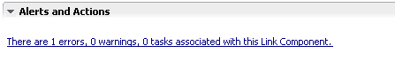
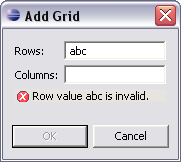

When MCS validates the content of work you have done, it reports any problems. What you see depends on the situation.
In the Alerts and Action Items section of a policy editor, the error information is updated each time you make a change. For example when you add a new variant to a component, MCS validates the change and reports on any required attributes that are missing. As you enter valid attribute data the list changes until there are no errors showing.
If there are any current errors, you'll see a link to the relevant items in the Problems view, for example, 'There are 2 errors 0, warnings and 3 tasks associated with this theme'. You can click on the link to highlight the items in the problem list. If there are no errors, you'll see 'No alerts at this time'.

The same problems are also included in the workbench Problems view. If the Problems view is closed when MCS first reports an error, MCS opens the view to show the problem.
The Problems list contains all the outstanding items that need your attention. When you select an MCS resource and right click Go To, MCS brings the resource tab to the front (or opens the editor if it is closed), and highlights the control where the problem is.
Errors in dialogs are shown by text in the body of the dialog.

Tip: In the Navigator and Package Explorer views, MCS error markers propagate right up to project level, so you can spot problems even if an editor is not open on a resource, a folder is closed, or the Problems view is hidden or closed.
Related topic
MCS policy editors